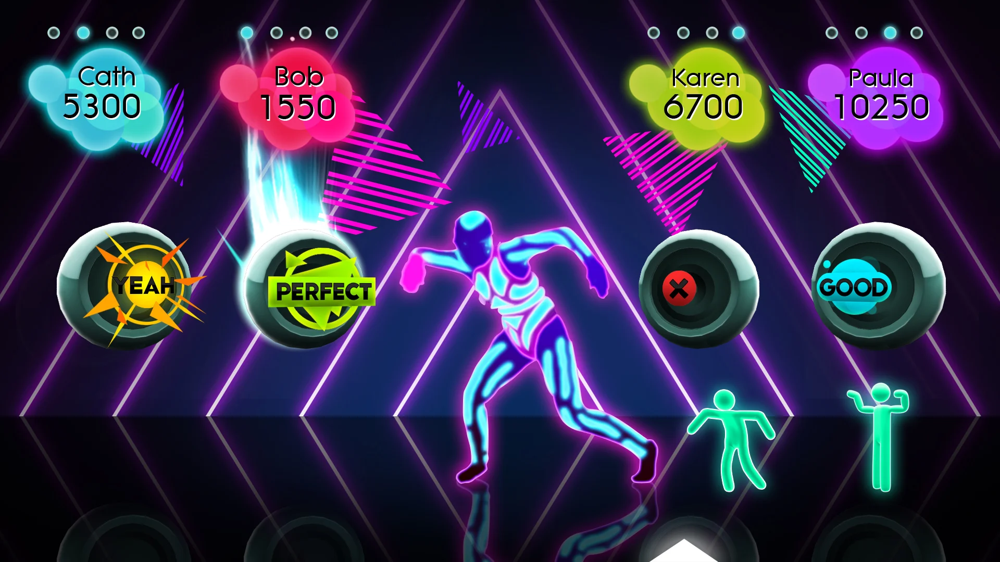
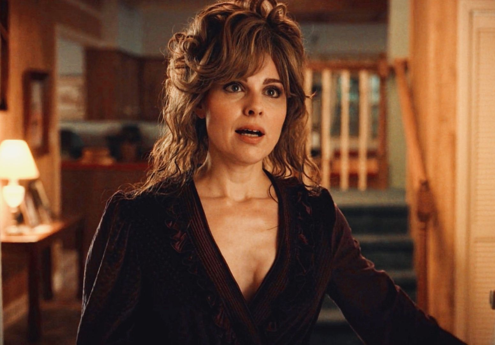

My Favorite Things!!!
Elf on the Shelf
We all know that the Elf on the Shelf is the true meaning of Christmas.Elf on the Shelf has become a beloved Christmas tradition that brings joy, magic, and excitement to families during the holiday season. This charming tradition not only encourages good behavior in children but also fosters creativity and imagination in parents as they come up with new and entertaining scenarios for their elf each night. The Elf on the Shelf creates lasting memories and strengthens family bonds through shared experiences of discovery and wonder. Its flexibility allows families to tailor the tradition to their own values and beliefs, making it accessible to a wide range of cultures and households. Furthermore, the Elf on the Shelf has evolved beyond just a behavior management tool, with many families using it as an opportunity to teach kindness, generosity, and the true spirit of Christmas. The phenomenal success of this simple concept, which has grown from a self-published book to a global sensation, demonstrates its power to captivate hearts and minds, making it a cherished part of modern Christmas celebrations.The Boston Tea Party
The Boston Tea Party stands as one of the most iconic and inspiring events in American history, embodying the spirit of rebellion and the fight for liberty. This audacious act of defiance against British taxation and oppression ignited the spark that would ultimately lead to the American Revolution. The courage and conviction displayed by the Sons of Liberty, who risked severe punishment to stand up for their beliefs, continues to inspire generations of Americans. Their bold action of dumping 342 chests of tea into Boston Harbor not only dealt a significant economic blow to the British East India Company but also sent a powerful message that resonated throughout the colonies. The Boston Tea Party's legacy extends far beyond its immediate impact, serving as a symbol of grassroots resistance against tyranny and unjust governance. It demonstrates the power of ordinary citizens to effect change when united in purpose, and its influence can be seen in countless protest movements throughout history. The event's enduring place in American folklore and its ability to capture the imagination of people worldwide make the Boston Tea Party a truly remarkable and celebrated moment in the birth of a nation.Just Dance 2
Just Dance 2 is the ultimate party game that transforms living rooms into vibrant dance floors, making it the best thing ever. This sequel takes everything great about the original and amplifies it, offering an impressive tracklist of over 45 songs spanning various genres, ensuring there's something for everyone. The game's improved visuals, featuring fully animated backgrounds and higher-resolution artwork that match each song's theme, create an immersive and visually stunning experience. Just Dance 2's choreography is both inspired and hilarious, with comical spins, jumps, and crossovers that encourage players to let loose and have fun. The addition of new modes like Duets and Dance Battles allows for even more social interaction, supporting up to eight players and fostering friendly competition. Beyond its entertainment value, Just Dance 2 offers health benefits through its "Just Sweat" mode, disguising exercise as fun and helping players burn calories while having a blast. With its simple yet improved controls, diverse song selection, and ability to bring people together, Just Dance 2 stands out as an unparalleled source of joy, laughter, and unforgettable moments with friends and family.
Karen Wheeler
My celebrity crush. Karen Wheeler from Stranger Things is an exceptional character who embodies the best qualities of a loving mother and a resilient individual. Her unwavering support for her children, especially during the chaotic events in Hawkins, showcases her strength and dedication. Karen's character development throughout the series is remarkable, transforming from a seemingly oblivious wine mother to an understanding, feminist role model. Her heart-to-heart conversation with Nancy in season 3 reveals her depth, vulnerability, and desire for her children to achieve their dreams, even if she couldn't pursue her own. Karen's warmth, empathy, and ability to balance family life with personal growth make her relatable and inspiring. Her evolution from a background character to a more dynamic and confident individual demonstrates her adaptability and inner strength. Karen's nurturing nature, combined with her growing self-awareness and courage to challenge societal norms, makes her a truly admirable character and an unsung hero of the show.
Earth
Earth is undeniably the best thing ever, a magnificent blue marble suspended in the vastness of space, teeming with an incredible diversity of life. It's the only known planet in the universe that harbors life, making it a unique oasis in the cosmic desert. From the towering peaks of the Himalayas to the depths of the Mariana Trench, Earth offers breathtaking landscapes that inspire awe and wonder. Its complex ecosystems support an astounding array of plant and animal species, each playing a crucial role in the planet's delicate balance. The Earth's atmosphere protects us from harmful radiation while creating stunning phenomena like auroras and rainbows. Our planet's geological processes have shaped beautiful natural wonders, from the Grand Canyon to the Great Barrier Reef. Earth's ability to sustain human civilization, providing us with resources, food, and the very air we breathe, makes it truly irreplaceable. As our cosmic home, Earth continues to surprise and delight us with its beauty, complexity, and resilience, making it, without a doubt, the best thing ever.
- Why is Earth #1?
- The flatness is beautiful.
- Created by God.
- Dolphins and Whales.